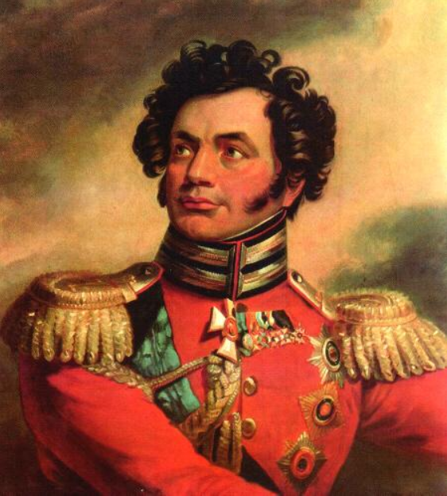
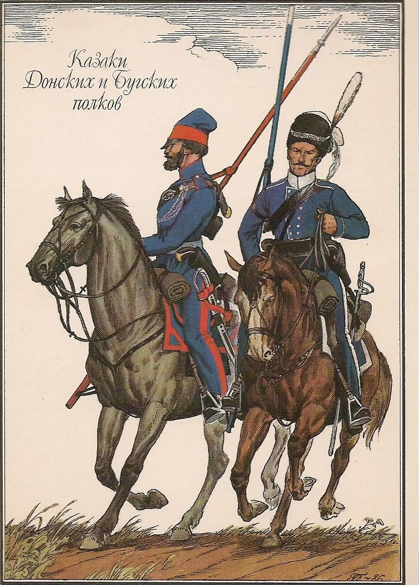
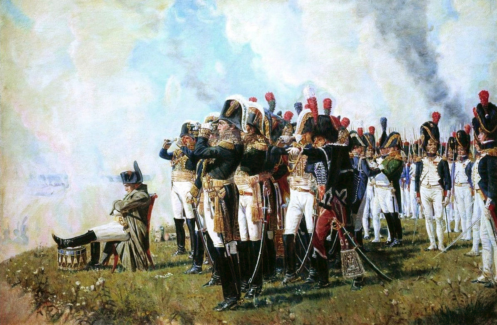
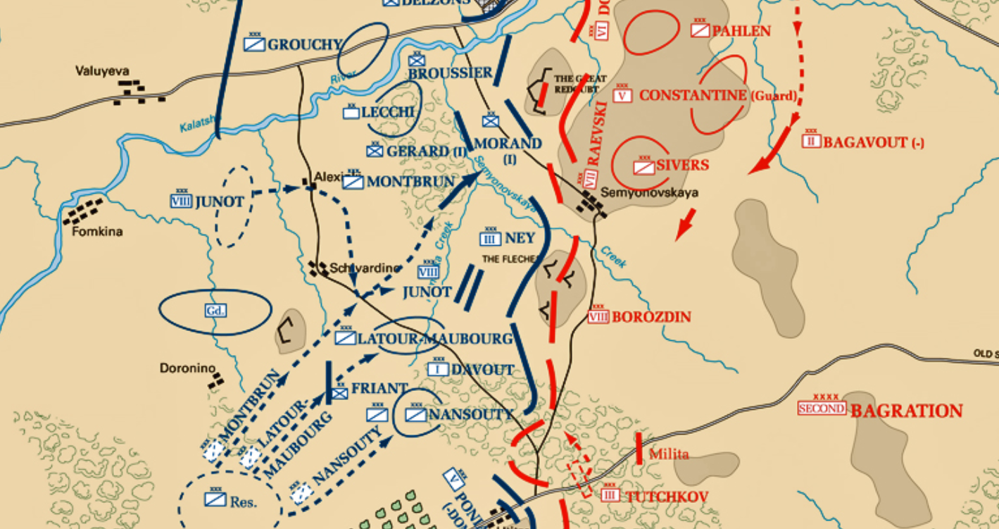
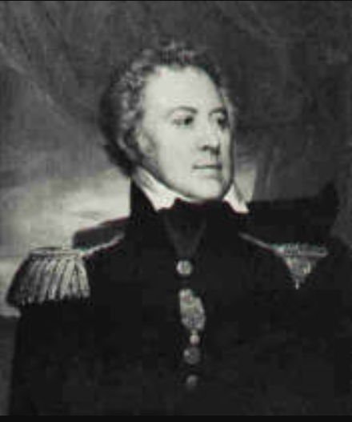

보로디노 전투 (9) - 우연 또는 필연
게시: 2020-09-21T06:30:41+09:00
오전 11시 정도에 고리키 마을 동쪽으로 사령부를 더 후퇴시킨 쿠투조프는 무척 편안한 모습이었습니다. 이건 결코 모든 전황을 통제하고 있는 자신감에서 나온 것이 아니라 철저한 나태와 무관심에서 비롯된 것이었습니다. 러시아군 참모 장교 하나는 당시 쿠투조프의 모습에 대해 '러시아 최고 가문들 출신의 우아하게 차려 입은 장교들과 함께 여유롭게 소풍을 즐기고 있었다'라며 비난했습니다. 그런 목가적인 신사분들에게 보기 흉하게 피를 철철 흘리는 프랑스군 보나미 장군이 끌려오자, 쿠투조프는 완벽하고 우아한 프랑스어로 접견하며 치료를 받고 쉬라고 권한 뒤, 마치 이미 승리하기라도 한 듯이 휘하 참모 장교들과 계속 노닥거렸습니다. 쿠투조프의 소풍 분위기를 해친 것은 피투성이 보나미 장군이 아니었습니다. 보나미가 부축을 받으며 물러가자마자 참모 톨 장군이 플라토프(Platov) 장군의 요청을 전달했는데, 그게 쿠투조프의 신경을 거슬렀습니다. 플라토프와 우바로프(Uvarov)는 각각 코삭 비정규 기병 5500과 정규 기병 2500을 거느린 채 프랑스군이 전혀 건드리지 않고 있는 러시아군 우익 끝에서 아무 하는 일 없이 지루한 하루를 보내고 있었습니다. 그들에게도 러시아군 좌익과 중앙에서 어느 정도의 참극이 벌어지고 있는지 소식이 계속 들어왔는데, 자신들은 그냥 한가롭게 하품이나 하고 있는 것이 너무 한심했던 나머지 플라토프가 적극적으로 공격을 제안했던 것입니다. 플라토프의 요청은 그와 우바로프의 8천 기병이 콜로차 강을 건너 프랑스군 좌익을 우회하여 프랑스군의 뒤를 치겠다는 것이었습니다. 쿠투조프는 플라토프의 제안에서 그 내용보다는 마치 자신의 지휘에 의문을 표하는 듯한 그 시건방짐 자체가 마음에 들지 않았습니다만, 여태까지 하던 대로 그냥 '좋아, 그대로 하게'라며 별 생각 없이 허락을 했습니다. 플라토프와 우바로프의 기병들은 신이 나서 말을 달렸습니다.

(우바로프(Fedor Petrovich Uvarov)입니다. 그는 나폴레옹과 동갑이었는데, 그의 가문 덕분에 그는 불과 29세의 나이에 이미 육군 중장까지 승진한 상태였습니다. 그는 짜르 파벨 1세에게 총애를 받고 있었으나 그럼에도 불구하고 파벨 1세의 암살에 참여했던 일당 중 하나였습니다.)

(코삭 기병들입니다. 이들은 러시아군에게 경기병을 공급하는 댓가로 돈 강 유역에서 반유목 생활을 하며 반(半)자치를 누렸습니다. 그러나 정규 기병대와는 달리 이들은 밀집 보병대에 대해 돌격을 한다든지 하는 전술 훈련은 전혀 받지 않았으며 주임무는 정찰과 추격, 보급마차 습격 등이었습니다. 따라서 이들의 군사적 가치는 거의 민병대 수준을 벗어나지 못했습니다. 물론 나폴레옹이 패퇴할 때 그 뒤를 추격하는데는 정말 딱 적격이었지요.)
프랑스군 좌익에는 디코이 역할을 하던 외젠의 제4 군단 정말 하나 뿐이었고, 그나마 예상보다 가열차게 진행된 견제 공격 때문에 여력이 별로 없던 상황이었습니다. 생각하지 못했던 러시아 기병대가 텅빈 좌익 뒤편에 나타나자 외젠의 사단들은 패닉을 일으키며 허둥지둥 콜로차 강을 다시 건너 후퇴했습니다. 정작 이 8천의 라이더들은 별 전과를 올리지 못했습니다. 그랑다르메가 1805년 아우스테를리츠 때에 비해 아무리 질적 저하가 심했다고 하더라도 여전히 많은 고참병들과 숙련된 장교들을 포함하고 있었고, 대부분이 작은 말을 탄 비정규 코삭 기병들은 대규모 보병 부대에 돌격할 각오도 규율도 솜씨도 없었습니다. 외젠의 사단들이 곧 진정하고 기병들의 습격에 대비하여 보병 방진을 짜자 러시아 기병들은 어쩔 줄을 모르고 우르르 몰려다니기만 했고, 프랑스군 보병 방진에 포함된 대포들이 포도탄을 몇 방 발사하자 벌에 쏘인 듯 우르르 후퇴하여 다시 콜로차 강을 건너가 버렸습니다. 이들의 뒤를 긴급 투입된 프랑스 용기병들이 추격했습니다. 러시아군으로서는 매우 보기 흉한 모습이었습니다. 공연히 기병대를 위험에 노출시켜 무의미한 사상자만 냈고, 숫자도 많지 않은 프랑스 용기병들에게 쫓겨 허겁지겁 퇴각하는 추태를 보여 전체 러시아군의 사기만 떨어뜨렸으니까요. 쿠투조프는 풀이 죽은 채 나타난 플라토프와 우바로프에게 비아냥이 잔뜩 섞인 냉소적인 축하 인사를 보냈습니다. 그러나 이들 모두가 예상하지 못한 결과가 나왔습니다. 8천의 기병대가 일으키는 먼지와 말발굽 소리, 그리고 2만의 병사들이 당황해서 아우성치는 소리는 셰바르디노 언덕 위에서 망원경으로 전황을 살피던 나폴레옹의 눈에도 들어왔습니다. 나폴레옹이 아끼고 아끼던 근위대 투입 카드를 만지작거리고 있던 바로 그 순간이었습니다. 나폴레옹은 러시아군이 오히려 아군의 좌익을 우회하여 빈틈을 공격하리라고는 예상하지 못했습니다. 원래 그렇게 예상하지 못했던 상황에 대비하는 것은 지휘관이 당연히 챙겨야 할 항목 중 하나였고, 나폴레옹도 물론 챙겨두었습니다. 그게 바로 근위대였습니다. 이런 상황에서 근위대를 네와 다부가 요청하는 대로 러시아군 좌익에 몰빵 투입하는 것은 상식적으로도 꽤 중대한 모험이었습니다. 나폴레옹이 5년만 더 젊었다면, 아니 그냥 그 날 컨디션만 좋았다면 좀더 과감한 결정을 내렸을 지도 모르겠습니다. 그러나 나폴레옹은 이미 지킬 것이 많은 40대 중반 아저씨가 되어 있었고 몸도 무척 안 좋은 날이었습니다. 나폴레옹은 그랑다르메 좌익에서 벌어진 작은 소동에 겁을 먹고 근위대 투입을 중단시키고 '좀 더 상황을 살피기로' 했습니다.

(셰바르디노 언덕에서 전황을 살피는 나폴레옹입니다. 차라리 이때 셰바르디노 언덕이 프랑스군 수중에 있지 않았다면 전황이 나폴레옹에게 더 유리하게 돌아갈 수도 있었을 것입니다. 아는 것이 병, 모르는 것이 약이라는 말이 여기에 어울립니다.) 이 결정이 보로디노 전투의 승패를 판가름했습니다. 그리고 본인들은 전혀 몰랐겠지만, 플라토프와 우바로프의 즉흥적인 돌격이 이 큰 결정의 원인이었습니다. 그런데 과연 정말 그랬을까요 ? 나폴레옹이 근위대를 투입하지 못한 이유가 단지 이 8천의 기병들 때문이었을까요 ? 물론 아닙니다. 전에도 언급했지만 1812년 원정은 처음부터 온갖 기술적 문제를 안고 시작한 것이었고, 그런 문제들은 나폴레옹으로부터 차곡차곡 통행세를 걷어갔습니다. 그 때문에 나폴레옹은 쿠투조프에 비해 압도적인 병력을 가지지도 못했고, 남아있는 병력들은 굶주린 채 이질과 설사에 시달리고 있었으며, 그때문에 예전 같으면 지원군 없이도 간단히 박살을 내놓았을 부실한 러시아군 좌익을 다부와 네 등의 4개 군단으로도 완전히 격파하지 못했던 것입니다. 특히 러시아 기병대의 우회 공격에 나폴레옹이 크게 흔들렸던 이유는, 그랑다르메 중에서도 특정 부대가 가장 비싼 통행세를 냈던 것과 깊은 관련이 있었습니다. 바로 기병대였습니다. 당시 그랑다르메의 병사들도 죽을 고생을 하고 있었지만, 특히 말들은 정말 길가에서 픽픽 죽어 넘어졌습니다. 이 때문에 그랑다르메의 기병대는 숫자도 크게 줄었지만 살아남은 말들도 제대로 돌격을 감행하지 못할 정도로 지치고 쇠약해진 상태였습니다. 만약 나폴레옹과 그의 군대가 정상적인 상태였다면 언제나처럼 뮈라의 예비 기병군단이 양익에 버티고 있다가 그런 기습에 간단히 대응했을 것입니다. 잠깐, 뮈라의 기병 예비군단은 보로디노에도 있었습니다. 뮈라 휘하에는 낭수티(Nansouty)의 제1 기병군단, 몽브렁(Montbrun)의 제2 기병군단, 그리고 라 투르 모부르(La Tour Maubourg)의 제4 기병군단이 있었습니다. 이들은 오전 내내 바그라티온의 철각보 현장에 투입되어 다부와 네 등을 지원하고 있었습니다. 몽브렁은 라에프스키 보루의 공격을 뒤에서 지원하고 있었고요. 하지만 보루나 철각보 등의 방어물이 얽혀 있는 좁은 지역에서 기병대는 그다지 할 일이 많지 않았고 이들의 오전은 피곤할 뿐이었습니다. 하지만 이들에게 오후는 상당히 잔혹했습니다.

(오전의 프랑스 기병대 현황입니다. 몽브렁은 라에프스키 보루 앞에, 낭수티와 라 투르 모부르는 바그라티온 철각보 앞에 배치된 것을 보실 수 있습니다. 가운데에 사선 하나가 그어진 사각형이 기병 군단을 뜻합니다.)

(라 투르 모부르(Marie-Victor Nicolas de Faÿ, marquis de La Tour-Maubourg)입니다. 혁명 이전부터 귀족 가문 출신이었던 그는 한때 망명 귀족으로 벨기에에 피신해있기도 했습니다. 나폴레옹 휘하로 들어간 것은 이집트 원정이 처음이었고, 그나마 나폴레옹과 사이가 좋지 않았던 클레베르의 부관으로서였습니다. 그는 1813년 라이프치히 전투에서 용감히 싸우다 한쪽 다리를 잃었는데, 그의 부상을 보고 눈물을 흘리는 시종(valet)을 보고 이렇게 말한 것으로 유명합니다. "왜 우는 거야 ? 이제 장화는 한짝만 닦으면 되는데 말이야." 그는 백일천하 때 현명하게도 부르봉 왕가 편에 섰기 때문에 나중에 후작의 지위까지 올라갑니다.) Source : 1812 Napoleon's Fatal March on Moscow by Adam Zamoyski
en.wikipedia.org/wiki/Battle_of_Borodino
en.wikipedia.org/wiki/Victor_de_Fay_de_La_Tour-Maubourg
rusgenerals.oooprog.ru/index.php?id=uvarov
www.planetfigure.com/threads/cossack-uniformsa-napoleonic-wars.193890/